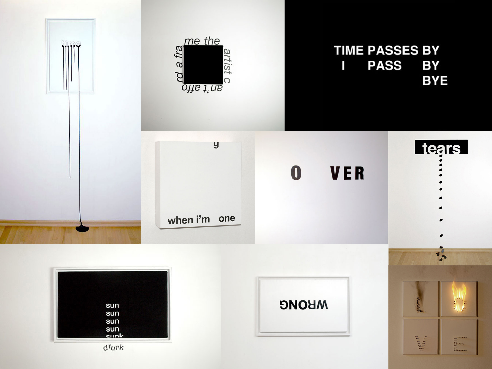
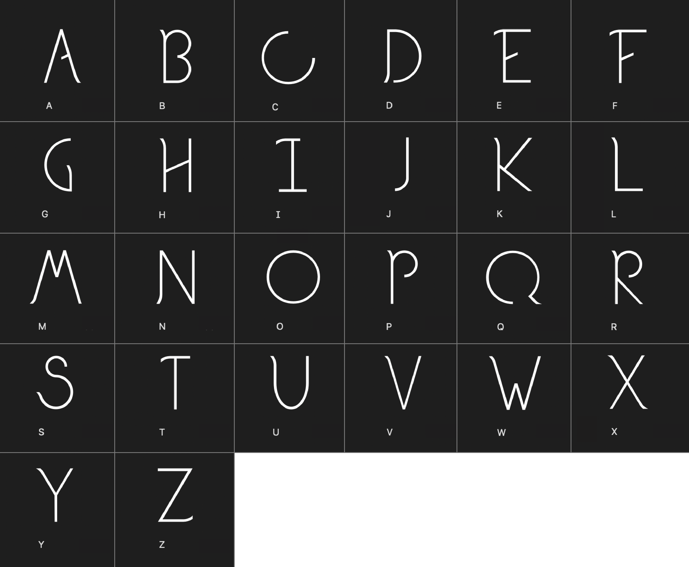
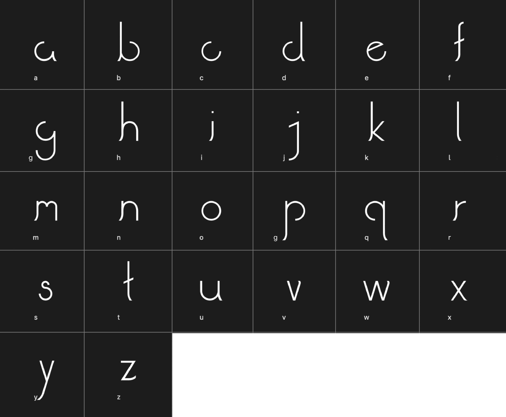
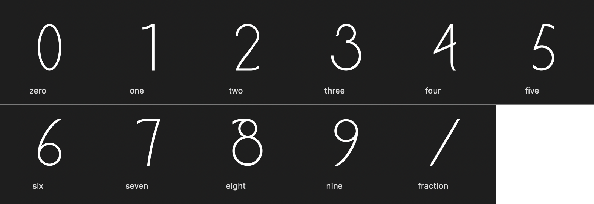
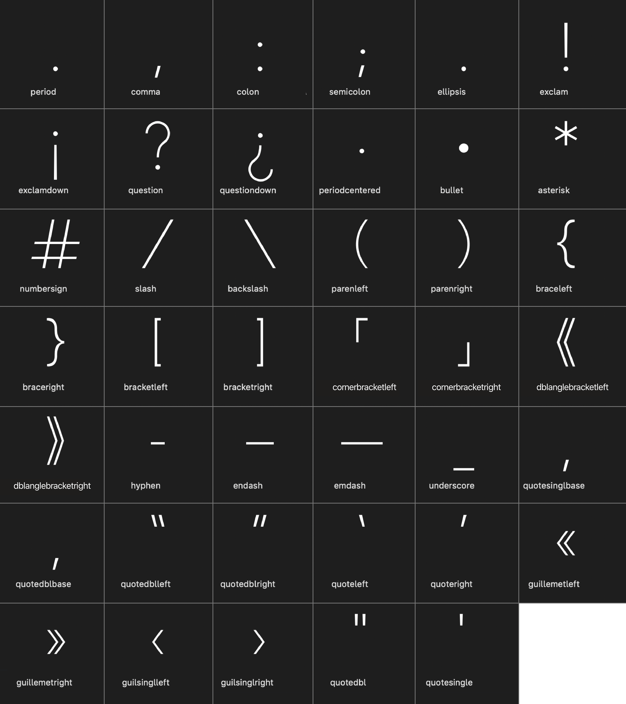
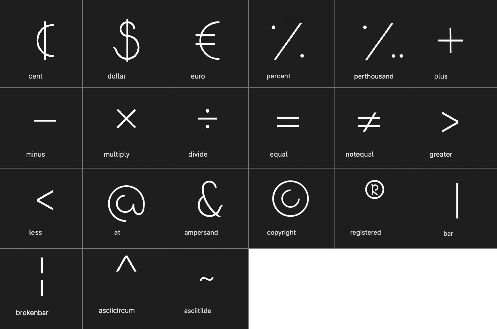
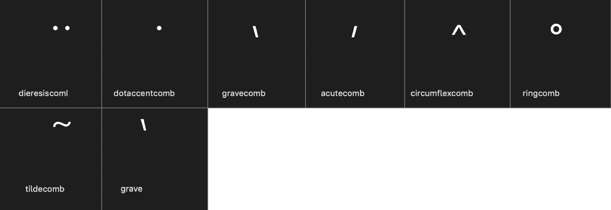
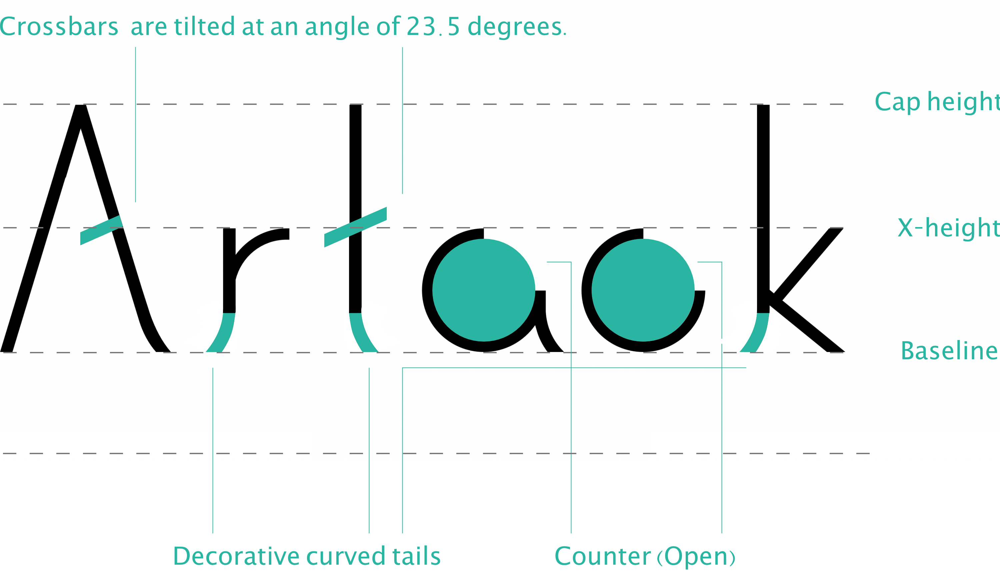
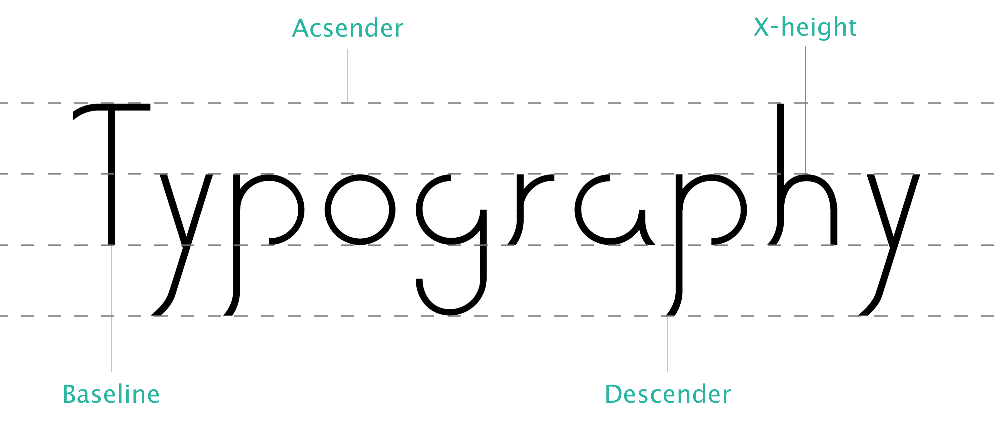
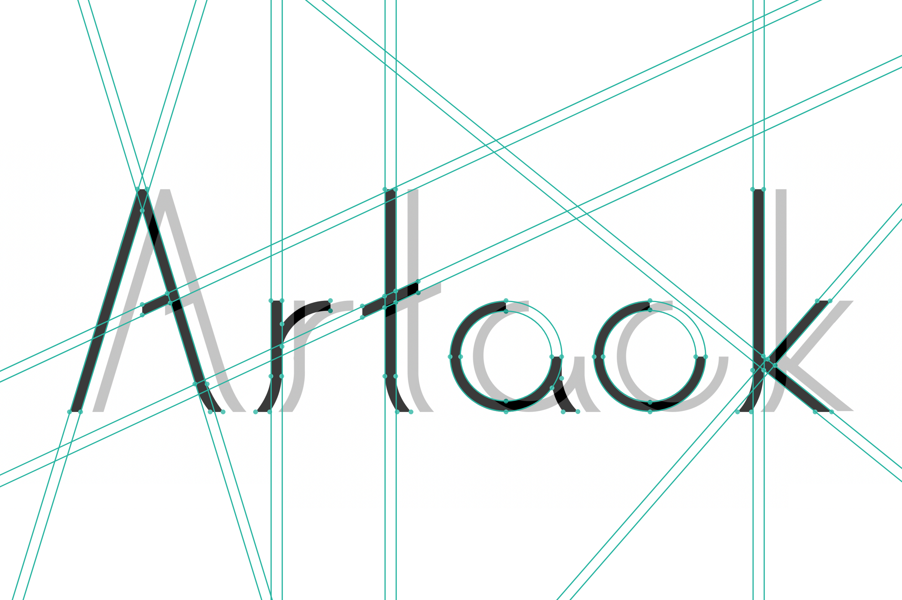

Artack Type Design
Date: Spring 2020, Time: 3 Months,
Role: Type Design, Team: Personal Project.
Role: Type Design, Team: Personal Project.
Introduction
Artack is a clean, contemporary, and artistic sans-serif typeface including regular weights with a thin, uniform line width and details that enhance legibility. Artack is designed to be used as the brand typeface of Virtual Museum of Broken Relationships. It serves for installation art, signage and wall lettering inside the museum, as well as for visual poetry, posters, web banners, packaging, and more.
Inspiration
Artack is inspired by visual poetry by Anatol Knotek. Anatol Knotek is a talented artist and poet based in Vienna. He creates brilliant and minimalistic pieces of concrete poetry that communicates messages in a way that words alone never could.
Concrete poetry is a wonderful form of visual and literary art in which the physical arrangement of the words is just as important as the words themselves. Knotek uses this technique to full effect, creating clever arrangements of letters, words, and minimalistic visual elements that might sometimes take a few moments of consideration before you get exactly what he’s trying to say.

Glyphs
UPPERCASE

LOWERCASE

LIGATURES
NUMBERS

PUNCTUATIONS

SYMBOLS

MARKS

Architecture


Mockups
Artack is shown as visual poetry in Virtual Museum of Broken Relationships.
Motion
Download
Artack is designed by Danting Li in 2020. The typeface and specimen were created and submitted as a final project for WNM 270 Type Design with DC Scarpelli at Academy of Art University.
By downloading this font, you agree to the font license agreement.
